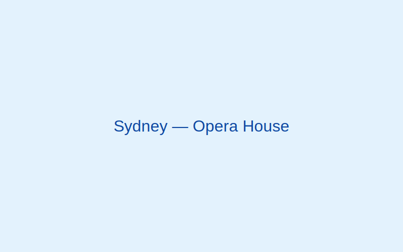

Sydney, Australia
Sydney delights with its sparkling harbour, laid-back beaches, and iconic architecture.
Gallery

Why visit
Outdoor living at its best—coastal walks, surf culture, and a thriving dining scene.
Best time to visit
September–November and March–May bring pleasant weather and fewer crowds.
Top attractions
- Opera House & Circular Quay
- Harbour Bridge Climb
- Bondi to Coogee Coastal Walk
- Taronga Zoo
- The Rocks historic precinct
Local food & culture
- Flat white
- Silky espresso-based coffee beloved by locals.
- Seafood
- Fresh catches feature heavily in Sydney's cuisine.
- Beach lifestyle
- Relaxed, outdoorsy vibe—bring sunscreen and a hat!